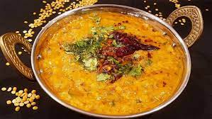

Dal Tadka

Sizzling hot Dal Dadka!(yellow lentil curry)
Healthy and tasty recipe famous in North India. Usually served with Indian flat bread (roti).
Ingredients
- Yellow Lentil (Dal)
- Water
- Tomato
- Onion
- Ginger-Garlic Paste
- Salt
- Red Chilly Powder
- Turmeric
- Coriander Powder
- Olive Oil
- Cumin Seeds
- Red Chilly Whole
- Asafoetida (Hing)
- Coriander Leaves
Step-by-Step
- Firstly, soak 1 cup of dal in warm water for atleast 30min before cooking.
- Meanwhile, chop up the tomatoes and onions.
- Now, strain the dal and add into a pressure cooker.
- Add 1:3 ratio water (so 3 cups) to the cooker.
- Boil the dal.
- Now, add in the spices in low quantity into the cooker. (We'll add more at the end!)
- Now, close the lid and cook till 3 whistles.
- After that, prepare the first tempering: Add some oil to a small pan.
- Now, add cumin seeds, dry spices and salt and pepper to it along with tomatoes and onions.
- Cook for 5-10min and then pour the contents into the cooker.
- Mix well.
- Now for the second tempering, again heat a small pan and add 1-2 tbsp of oil.
- Then, add 1/2 tsp of asafoetida to it.
- Add 1 tbsp Ginger-Garlic paste.
- Add 2-3 whole red chillies.
- Now, add the contents to the dal. (sizzling!!!)
- Serve hot with roti :)